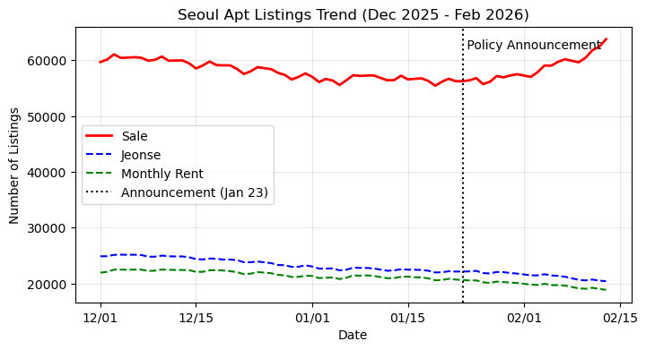
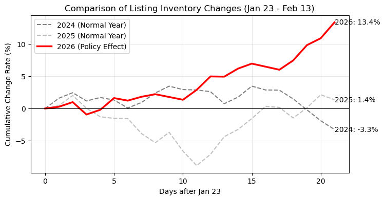

Ch 8. Analysis of Seoul Apartment Listing Changes#
1. Data Input#
Daily online aggregate listing counts: Sale + Jeonse + Monthly Rent
Date Sale Jeonse Monthly_Rent Total_Listings 26/02/13 63,745
20,422
18,891
103,058
26/02/12 62,357
20,523
19,044
101,924
Source: Asil, Real Estate Study, Listing Changes (Seoul APT daily, as of 2026.02.15)
Gemini’s Dataset Construction#
The requested Seoul APT daily listing trend dataset has been generated.
The data was extracted and structured from the input text, pulling ‘Date’, ‘Sale’, ‘Jeonse’, ‘Monthly Rent’, and ‘Total Listings,’ with a total of 1,065 observations. The generated CSV file can be downloaded and used below.
Data Structure Example#
Date |
Sale |
Jeonse |
Monthly Rent |
Total Listings |
|---|---|---|---|---|
2023-02-01 |
52,236 |
52,914 |
29,627 |
134,777 |
2023-02-02 |
52,006 |
52,898 |
29,661 |
134,565 |
2023-02-03 |
52,878 |
53,420 |
29,874 |
136,172 |
… |
… |
… |
… |
… |
Note: Portions of the input data where the date and sale count were concatenated (e.g., 26/02/1363,745) were automatically separated and correctly processed as 2026-02-13 and 63,745.
The file has been saved as:
seoul_apt_listings.csv
2. Question I#
Has any change been detected in Seoul apartment listings since January 23, 2026, when the government officially announced that the capital gains tax deferral extension for multi-property owners would not be renewed?
Gemini’s Analysis#
Yes, following the government’s announcement on January 23, 2026 that the heavy capital gains tax deferral for multi-property owners would not be extended, clear and immediate changes have been detected in Seoul apartment listings.
In particular, sale listings surged while rental (jeonse/monthly rent) listings declined, exhibiting a decoupling phenomenon. This is interpreted as strong evidence that multi-property owners are converting their rental properties to sale listings or rushing them onto the market to avoid the heavy capital gains tax.
Key Changes (2026.1.23 – 2026.2.13)#
1. Surge in Sale Listings (Signs of Panic Selling)
January 23: 56,219 listings
February 13: 63,745 listings
Change: +7,526 listings (+13.4%) increase in just 3 weeks.
Notable: From early January through January 23, sale listings were flat or slightly declining in the 56,000–57,000 range, but the upward slope changed sharply immediately after the announcement.
2. Decline in Jeonse and Monthly Rent Listings (Rental → Sale Conversion)
Jeonse: 22,156 → 20,422 (-7.8% decrease)
Monthly Rent: 20,628 → 18,891 (-8.4% decrease)
Interpretation: Properties previously listed as jeonse or monthly rent are being absorbed into the sale market, causing rental market supply to actually shrink.
Visual Analysis#
The graph below shows the trend from December 2025 to February 2026. Starting from January 23 (dotted line), the red solid line (sale) rises sharply while the blue/green dashed lines (jeonse/monthly rent) trend downward.

Conclusion: The government’s announcement had an immediate impact on the market, and multi-property owners appear to have begun flooding the market with tax-motivated listings. Whether this listing surge will lead to actual transaction price declines remains to be seen, but the short-term supply shock has already materialized.
3. Question II#
Analyze whether there are seasonal factors at play
Gemini’s Analysis#
To isolate the pure policy effect by removing seasonal factors, a comparative analysis was conducted on the change in Seoul apartment sale listings during the same period (January 23 – February 13) over the most recent 3 years (2024–2026).
The analysis confirmed that an anomalous surge that cannot be explained by seasonal factors appeared in 2026.

1. Year-over-Year Comparison (Jan 23 – Feb 13)#
Year |
Listings on Jan 23 |
Listings on Feb 13 |
Change (Rate) |
Note |
|---|---|---|---|---|
2024 |
76,010 |
73,536 |
-2,474 (-3.3%) |
Typical seasonality (listings absorbed by increased transactions) |
2025 |
89,020 |
90,238 |
+1,218 (+1.4%) |
Flat trend (no major changes) |
2026 |
56,219 |
63,745 |
+7,526 (+13.4%) |
Anomalous surge (immediately after policy announcement) |
2. Seasonality vs. Policy Effect#
Typical pattern (2024): January to February typically sees active transactions ahead of the spring moving season, causing listings to be absorbed, resulting in a decline (-3.3%). This is the normal seasonal flow.
2026 anomaly: This year, contrary to the typical trend, listings surged explosively (+13.4%). This is not simply a seasonal phenomenon but strongly suggests that the government’s announcement of no capital gains tax deferral extension acted as a direct trigger on the market.
3. Conclusion#
The surge in listings after January 23, 2026 is judged to be driven by policy factors, not seasonal factors. Compared to the same-period data in 2024 and 2025, the 2026 slope exhibits a distinctly different pattern, indicating that multi-property owners are treating the government’s announcement as a serious sell signal.
4. Question III#
Recommend additional empirical analyses to increase confidence that the listing surge was caused by policy factors
Gemini’s Analysis#
To more robustly establish the causal relationship that the listing surge was attributable to the specific policy of ‘the January 23 announcement of no capital gains tax deferral extension’ rather than mere coincidence or other macroeconomic factors (interest rates, recession, etc.), the following empirical analysis methodologies are proposed.
1. Difference-in-Differences (DiD) Analysis#
The most powerful causal inference tool. Rather than looking at Seoul as a whole, listings growth should be compared between a ‘treatment group estimated to have a high proportion of multi-property owners’ and a ‘control group with a high owner-occupancy rate.’
Hypothesis: Areas/complexes with a higher proportion of multi-property owners will show a steeper increase in listings after January 23.
Analysis method:
Treatment Group: Known leveraged investment areas (Nowon, Dobong, Gangbuk — the ‘No-Do-Gang’ districts) or small-unit apartments with high jeonse-to-price ratios.
Control Group: High-value owner-occupied areas (parts of Gangnam, Seocho — large units) or land transaction permit zones (gap investment impossible due to owner-occupancy requirements).
Verification: Check whether the listing trend lines of the two groups were parallel before January 23 (parallel trend) and diverged afterward.
2. Price-Listing Volume Correlation Analysis (Granger Causality Test Variant)#
This aims to characterize the nature of the increased listings. If multi-property owners are dumping properties under time pressure, a decline in asking prices should accompany the surge.
Hypothesis: If this is panic selling due to policy shock, the increase in listing volume should Granger-cause a decline in asking prices with a time lag.
Analysis method:
Cross-correlation analysis of weekly listing counts and weekly asking price change rates.
If listings surge but asking prices hold, the listings are ‘testing-the-water listings’; if asking prices drop sharply, they are ‘tax-motivated distressed listings.’
3. Interrupted Time Series (ITS) Analysis#
This statistically validates the trend change visible in the line graphs.
Hypothesis: At the January 23, 2026 cutoff, the time series ‘slope’ and ‘level’ changed in a statistically significant manner.
Analysis method:
Regression equation: \(Y_t = \beta_0 + \beta_1 T + \beta_2 D_t + \beta_3 (T \times D_t) + \epsilon_t\)
\(Y_t\): Number of listings
\(T\): Time elapsed
\(D_t\): Dummy variable for post-announcement period (0 or 1)
\(T \times D_t\): Time elapsed after announcement (for detecting slope change)
Test whether \(\beta_3\) (slope change coefficient) is statistically significant in the positive (+) direction (t-test).
4. Text Mining: ‘Distressed Sale’ Keyword Analysis#
To supplement the limitations of quantitative data (counts) by analyzing unstructured data (listing descriptions).
Hypothesis: The descriptions of listings registered after January 23 should show a significant increase in the frequency of keywords such as ‘capital gains tax,’ ‘urgent sale,’ ‘tax-motivated,’ ‘corporate,’ and ‘owner direct.’
Analysis method:
Crawl listing description text from platforms such as Naver Real Estate.
Conduct TF-IDF analysis by period (pre- vs. post-announcement) to extract newly prominent feature words after January 23.
5. Multiple Regression with Macroeconomic Controls#
To preempt the counterargument that the listing increase may be attributable to other factors such as interest rate hikes or loan regulations.
Analysis method:
With listing count as the dependent variable, include the following as independent variables in a multiple regression:
\(X_1\): Market interest rate (e.g., 3-year government bond yield)
\(X_2\): KOSPI index (proxy for economic sentiment)
\(X_3\): Seasonal dummy
\(X_4\): Policy dummy (post-January 23)
If the coefficient of \(X_4\) remains significantly large even after controlling for the other variables (\(X_1, X_2, X_3\)), the policy effect is established.
Reference: Python Code#
import pandas as pd
import matplotlib.pyplot as plt
import matplotlib.dates as mdates
# Load dataset
df = pd.read_csv('../Data/seoul_apt_listings.csv')
# ── Rename Korean columns to English ──
df = df.rename(columns={
'일자': 'date',
'매매': 'sale',
'전세': 'jeonse',
'월세': 'monthly_rent',
'총매물수': 'total_listings',
})
# ── End rename block ──
df['date'] = pd.to_datetime(df['date'])
# Filter to the analysis period (Dec 2025 – Feb 2026)
mask = (df['date'] >= '2025-12-01')
df_recent = df.loc[mask].sort_values('date')
# Key date settings
announcement_date = pd.to_datetime('2026-01-23')
end_date = df_recent['date'].max()
# Compute statistics
# 1. Pre-announcement trend (Jan 1 – Jan 23)
pre_period = df_recent[(df_recent['date'] >= '2026-01-01') & (df_recent['date'] <= announcement_date)]
post_period = df_recent[(df_recent['date'] > announcement_date)]
# Extract values at specific points
val_jan23 = df_recent[df_recent['date'] == announcement_date].iloc[0]
val_latest = df_recent.iloc[-1]
# Calculate growth rates
sale_growth = (val_latest['sale'] - val_jan23['sale']) / val_jan23['sale'] * 100
jeonse_growth = (val_latest['jeonse'] - val_jan23['jeonse']) / val_jan23['jeonse'] * 100
monthly_growth = (val_latest['monthly_rent'] - val_jan23['monthly_rent']) / val_jan23['monthly_rent'] * 100
print(f"Jan 23 Sale: {val_jan23['sale']}, Latest Sale: {val_latest['sale']}, Growth: {sale_growth:.2f}%")
print(f"Jan 23 Jeonse: {val_jan23['jeonse']}, Latest Jeonse: {val_latest['jeonse']}, Growth: {jeonse_growth:.2f}%")
# Visualization
plt.figure(figsize=(8, 4))
plt.plot(df_recent['date'], df_recent['sale'], label='Sale', color='red', linewidth=2)
plt.plot(df_recent['date'], df_recent['jeonse'], label='Jeonse', color='blue', linestyle='--')
plt.plot(df_recent['date'], df_recent['monthly_rent'], label='Monthly Rent', color='green', linestyle='--')
# Mark announcement date
plt.axvline(x=announcement_date, color='black', linestyle=':', label='Announcement (Jan 23)')
plt.text(announcement_date, df_recent['sale'].max(), ' Policy Announcement', verticalalignment='top')
plt.title('Seoul Apt Listings Trend (Dec 2025 - Feb 2026)')
plt.xlabel('Date')
plt.ylabel('Number of Listings')
plt.legend()
plt.grid(True, alpha=0.3)
plt.gca().xaxis.set_major_formatter(mdates.DateFormatter('%m/%d'))
plt.show()
Jan 23 Sale: 56219, Latest Sale: 63745, Growth: 13.39%
Jan 23 Jeonse: 22156, Latest Jeonse: 20422, Growth: -7.83%

import pandas as pd
import matplotlib.pyplot as plt
import matplotlib.dates as mdates
# Load dataset
df = pd.read_csv('../Data/seoul_apt_listings.csv')
# ── Rename Korean columns to English ──
df = df.rename(columns={
'일자': 'date',
'매매': 'sale',
'전세': 'jeonse',
'월세': 'monthly_rent',
'총매물수': 'total_listings',
})
# ── End rename block ──
df['date'] = pd.to_datetime(df['date'])
# Year-over-year comparison period (Jan 23 – Feb 13)
# Compare 2024, 2025, 2026
target_years = [2024, 2025, 2026]
period_start_md = '01-23'
period_end_md = '02-13'
comparison_data = []
plt.figure(figsize=(8, 4))
colors = {2024: 'gray', 2025: 'silver', 2026: 'red'}
labels = {2024: '2024 (Normal Year)', 2025: '2025 (Normal Year)', 2026: '2026 (Policy Effect)'}
styles = {2024: '--', 2025: '--', 2026: '-'}
for year in target_years:
start_date = pd.to_datetime(f'{year}-{period_start_md}')
end_date = pd.to_datetime(f'{year}-{period_end_md}')
# Filter data for the corresponding period in each year
mask = (df['date'] >= start_date) & (df['date'] <= end_date)
period_df = df.loc[mask].sort_values('date').reset_index(drop=True)
if not period_df.empty:
# Calculate change rate (%) relative to Jan 23 of each year
base_value = period_df.iloc[0]['sale']
period_df['change_rate'] = (period_df['sale'] - base_value) / base_value * 100
# Calculate listing change figures
start_listings = period_df.iloc[0]['sale']
end_listings = period_df.iloc[-1]['sale']
delta = end_listings - start_listings
pct_change = (delta / start_listings) * 100
comparison_data.append({
'Year': year,
'Start_Listings': start_listings,
'End_Listings': end_listings,
'Change_Abs': delta,
'Change_Pct': pct_change
})
# Plot
# Common X-axis: days elapsed since Jan 23
days_passed = (period_df['date'] - start_date).dt.days
plt.plot(days_passed, period_df['change_rate'],
label=labels[year], color=colors[year], linestyle=styles[year], linewidth=2.5 if year==2026 else 1.5)
plt.title('Comparison of Listing Inventory Changes (Jan 23 - Feb 13)')
plt.xlabel('Days after Jan 23')
plt.ylabel('Cumulative Change Rate (%)')
plt.axhline(0, color='black', linewidth=0.8)
plt.legend()
plt.grid(True, alpha=0.3)
# Add numeric labels at end points
for year in target_years:
row = next(item for item in comparison_data if item["Year"] == year)
plt.text(21, row['Change_Pct'], f"{year}: {row['Change_Pct']:.1f}%", verticalalignment='center')
plt.show()
# Print comparison table
comp_df = pd.DataFrame(comparison_data)
print(comp_df)

Year Start_Listings End_Listings Change_Abs Change_Pct
0 2024 76010 73536 -2474 -3.254835
1 2025 89020 90238 1218 1.368232
2 2026 56219 63745 7526 13.386933